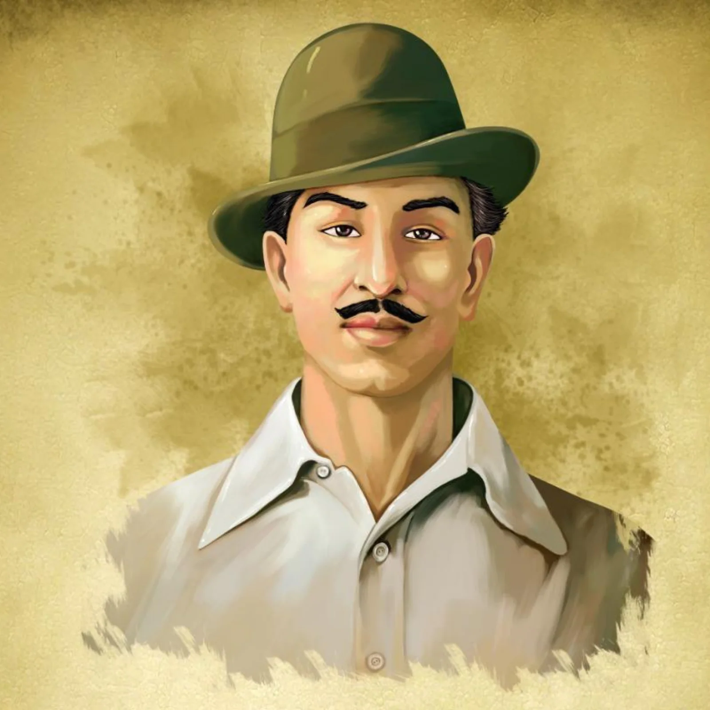

BHAGAT SINGH

- Bhagat Singh was one of the most prominent and renowned freedom fighters of India.
- He was a socialist revolutionary who bravely fought for the independence of the country.
- He was born in September 1907 in Banga village in Punjab to a Sikh family.
- His father’s name was Kishan Singh and his mother’s name was Vidyavati.
- Some of his family members were active participants in the Indian Independence Movement, while others were part of Maharaja Ranjit Singh’s army.
- He was a strong supporter of the Swadeshi Movement.
- In later years, his trust in non-violence withered. He began to believe that only armed rebellion could bring independence. He was then highly influenced by Lala Lajpat Rai.
- When Lala Lajpat Rai died after a lathi charge ordered by a British police superintendent, Bhagat Singh decided to avenge his death.
- He, along with his associates, was charged and found guilty of killing a British police officer.
- Bhagat Singh was hanged on 23 March 1931 in Lahore along with his associates, Shivaram Rajguru and Sukhdev.
For More Information Check Out Bhagat Singh